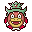
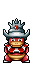
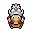
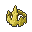

Pokédex / #199

Slowking #199
WaterPsychic
When its head was bitten, toxins entered SLOWPOKE's head and unlocked an extraordinary power.
Generation 2 · Johto

Stats
| Attack | 75 | |
|---|---|---|
| Defense | 80 | |
| Sp. Atk | 100 | |
| Sp. Def | 110 |
In the wild
| Wild level | 85–95 |
|---|---|
| HP | 95 |
| Experience | 15 |
| Egg groups | Monster, Water 1 |
Evolution
- Evolves from Slowpoke at level 35, with a Kings Rock.
Moves
| Level | Move | Type | Category | Power | Energy | Cooldown | Effect | |
|---|---|---|---|---|---|---|---|---|
| 1 | Tackle | Normal | Physical | 15 | 15 | 1s | Tackle is one of the most common and basic moves a Pokemon learns. It deals damage with no additional effects. | |
| 5 | Water Gun | Water | Special | 40 | 45 | 9s | Water Gun inflicts damage and has no secondary effect. | |
| 10 | Confusion | Psychic | Special | 50 | 60 | 12s | Confusion deals damage and has a 10% chance of confusing the target. | |
| 15 | Disable | Normal | Status | – | 100 | 120s | Disable causes the previous move the target used to be disabled for 100 seconds. If the target has not used any move, then will be random. | |
| 20 | Zen Headbutt | Psychic | Physical | 80 | 80 | 15s | Zen Headbutt deals damage and has a 20% chance of causing the target to flinch. | |
| 25 | Water Pulse | Water | Special | 60 | 65 | 9s | Water Pulse deals damage and has a 20% chance of confusing the target. | |
| 30 | Amnesia | Psychic | Status | – | 75 | 60s | Amnesia raises the user's Special Defense by two stages. | |
| 40 | Yawn | Normal | Status | – | 100 | 95s | In the turn that Yawn is used, the only effect will be the user yawning at the target. At the end of the next turn, the target (if still active) will fall asleep unless it gets affected by a major status condition in the meantime, a status-protecting move is used (like Safeguard or Uproar), or the battle ends. | |
| 45 | Psychic | Psychic | Special | 90 | 100 | 21s | Psychic deals damage and has a 10% chance of lowering the target's Special Defense by one stage. | |
| 50 | Future Sight | Psychic | Special | 120 | 120 | 15s | Future Sight deals damage, but does not hit until two turns after the move is selected. | |
| 55 | Heal Pulse | Normal | Special | 120 | 150 | 90s | Heal Pulse recover party members HP. | |
| 60 | Icy Wind | Ice | Special | 55 | 65 | 13s | Icy Wind deals damage and lowers the target's Speed by one stage. | |
| 65 | Power Gem | Rock | Special | 80 | 90 | 16s | Power Gem inflicts damage and has no secondary effect. | |
| 70 | Curse | Ghost | Status | 50 | 100 | 60s | Curse is a unique move that works differently for Ghost-type Pokemon than other Pokemon. Ghost-type Pokemon use 50% of their current HP to place a curse on the target. The cursed Pokemon loses hp during 5 turns. For all other Pokemon, Curse raises the user's Attack and Defense by one stage each and lowers Speed by one stage. |
Field abilities
DigStrengthFlashRock SmashBlinkTeleportHeadbutt
Special abilities
ObliviousOwn Tempo
Egg moves
BelchBelly DrumBlockFuture SightMe FirstMud SportSleep TalkSnoreStompWonder RoomZen Headbutt
Technical machines
AvalancheBideBlizzardBrick BreakCalm MindDouble EdgeDouble TeamDrain PunchDream EaterDynamic PunchEarthquakeFire BlastFlamethrowerFocus PunchFury CutterHailHeadbuttHyper BeamIce BeamIce PunchIcy WindIron TailLight ScreenMimicMud SlapNightmarePsychicRageRain DanceRestSafeguardShadow BallSubstituteSwiftThunder WaveToxicWater PulseZap Cannon
Drops
| Item | Amount | Chance | |
|---|---|---|---|
| water gem | 1–22 | 100% | |
| water pendant | 1 | 93.8% | |
| harden shell | 1 | 50% | |
| luminous orb | 1 | 15% | |
| melon | 1–5 | 5% | |
 | slowking doll | 1 | 0.1% |
| Splash Plate | 1 | 0.05% | |
| Mind Plate | 1 | 0.05% | |
 | King's Rock | 1 | 0.02% |
| TM 12 | 1 | 0.01% | |
| TM 27 | 1 | 0.01% | |
| TM 50 | 1 | 0.01% | |
| held mystic water | 1 | 0.01% | |
| held twisted spoon | 1 | 0.01% |